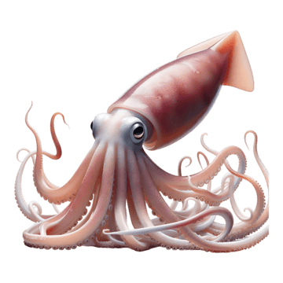

Loading Fishery Systems Map

Connecting to Google Sheets API...
Estimated time: 15-30 seconds

Variables that consistently rank high across multiple centrality metrics are likely to be the most influential in the fishery system.
Compare how variables rank across different centrality metrics to identify their roles in the system.
These radar charts show how key variables score across different centrality metrics, revealing their structural roles in the network.